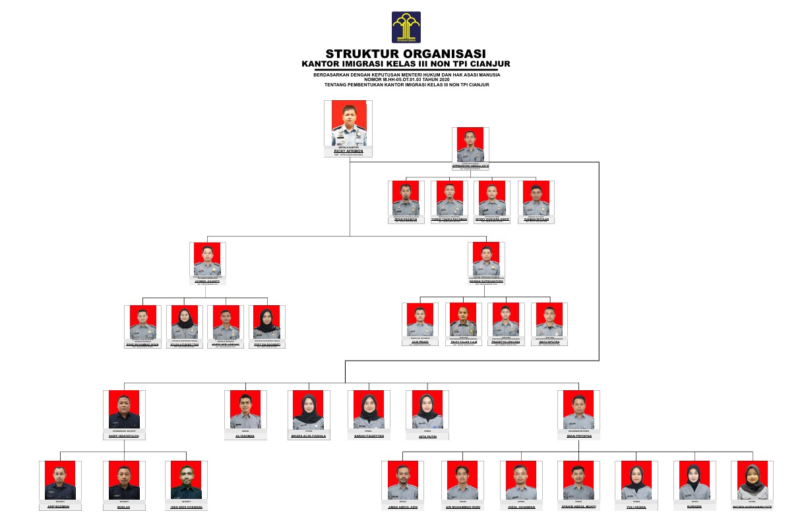

Profil Kantor Imigrasi
Sejarah
Kantor Imigrasi berdiri sejak tahun 2019 dengan tujuan memberikan layanan keimigrasian kepada masyarakat.
Visi & Misi
- Visi: Kementerian Hukum dan Hak Asasi Manusia yang Andal, Profesional, Inovatif, dan Berintegritas dalam pelayanan kepada Presiden dan Wakil Presiden untuk mewujudkan Visi dan Misi Presiden dan Wakil Presiden Indonesia Maju yang Berdaulat, Mandiri, dan Berkepribadian berlandaskan Gotong Royong
- Misi: Membentuk peraturan Perundang-Undangan yang berkualitas dan melindungi kepentingan nasional; Menyelenggarakan pelayanan publik di bidang hukum yang berkualitas; Mendukung penegakan Hukum di Bidang Kekayaan Intelektual, Keimigrasian, Administrasi Hukum Umum, dan Pemasyarakatan yang bebas dari korupsi, bermartabat dan terpercaya; Melaksanakan penghormatan, perlindungan dan pemenuhan Hak Asasi Manusia yang berkelanjutan; Melaksanakan peningkatan Kesadaran Hukum Masyarakat; Ikut serta menjaga stabilitas keamanan melalui peran Keimigrasian dan Pemasyarakatan; serta Melaksanakan tata laksana pemerintahan yang baik melalui Reformasi Birokrasi dan Kelembagaan
Struktur Organisasi
Tugas dan Fungsi
Tugas Pokok: Mengatur lalu lintas orang, melayani dokumen perjalanan dan izin tinggal, menegakkan hukum keimigrasian, serta melakukan intelijen keimigrasian.
Fungsi Utama: Pelayanan dokumen perjalanan dan izin tinggal, pengawasan dan intelijen keimigrasian, penindakan pelanggaran, pengelolaan sistem TI keimigrasian, penyampaian informasi publik, serta administrasi internal dan pelaporan.